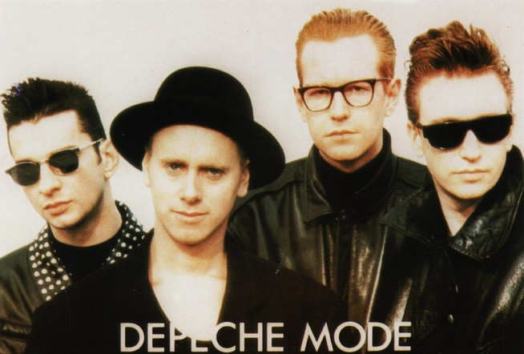
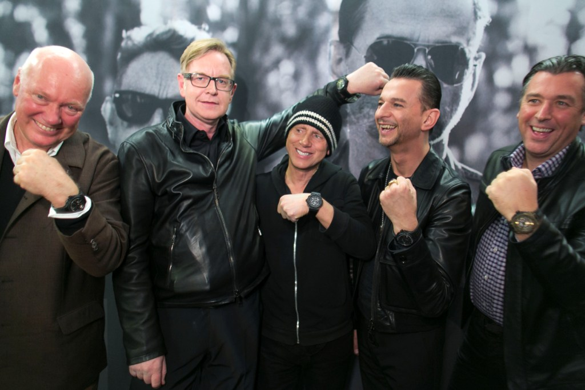
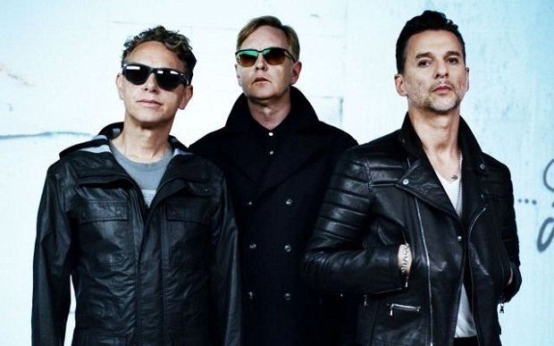
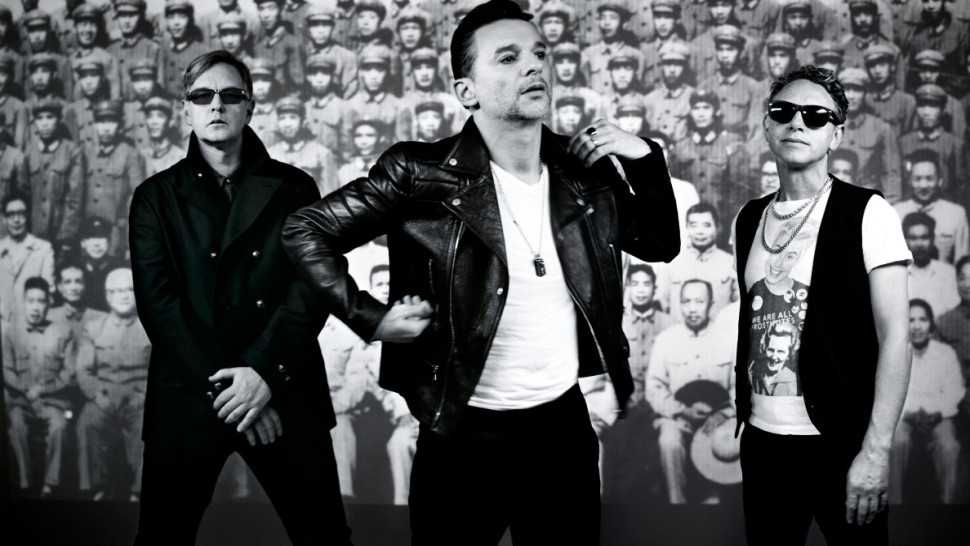

Historia Depeche Mode wg Daryl'a Bamonte
Wygląda to dziwnie, że pierwsza kolekcja singli grupy obejmuje cztery lata a już druga jej część gromadzi w sobie pół generacji. W rzeczywistości późniejszy okres zawiera tylko jeden album więcej niż ten wcześniejszy.
Łatwo (i cynicznie) byłoby podsumować, że "druga fala" tego robiącego wrażenie zbioru, była w jakiś sposób nie tak płynna jak ta pierwsza. Intensywność wydawania piosenek od pozornie najlepszych lat Depeche Mode przeniosła
zespół na kolejny poziom w procesie tworzenia albumów, który pasował do nienasyconego pożądania ze strony fanów w każdym zakątku kuli ziemskiej, aby tylko obejrzeć grupę na koncercie. W ten sposób cykl dojrzewał.
1986 rok ukazał zespół na godnej pozazdroszczenia pozycji. Dziennikarze (w końcu) wyrazili podziw i poza uzyskaniem szacunku, Depeche Mode w końcu zyskali uznanie, na które zasłużyli. Podjęto decyzję by udać się znowu do
Hansa Studios w Berlinie i kontynuować proces koprodukcji z odnoszącym sukces teamem producentów Daniel Miller / Gareth Jones. Piosenki na Black Celebration, szczególnie zapadający w pamięć pierwszy singiel Stripped, były
bardziej mroczne niż te z poprzednich albumów a zespół wyruszył w swoją największą trasę koncertową, która miała swój koniec na Valby Stadium w Kopenhadze. Znaczącym zdarzeniem podczas trasy było nakręcenie w Los Angeles
teledysku do A Question Of Time, pierwszy raz, kiedy fotograf Anton Corbijn wyreżyserował video dla grupy.

Kiedy rozpoczął się rok 1987 Martin miał już zbiorek piosenek demo i w Londynie rozpoczęło się programowanie [syntezatory wymagają odpowiedniego zaprogramowania dźwięków, które chce się uzyskać, co szczególnie przy takim
eksperymentowaniu z brzmieniami, jakie lubią Depeche Mode ma duże znaczenie - przyp. tłum.]. Nie chcąc spoczywać na laurach, zespół zadecydował, by rozerwać stałą grupę producentów i sprowadził Dave'a Bascombe, do tego
ruchu zachęcał Daniel Miller. W pełni objęci duchem zmian, wybrali też studio Guillame Tell w Paryżu zamiast Hansa. Strangelove zostało wydane na wiosnę i dało znak dojrzałości Music For The Masses a nastrój ten udzielił
się także przy przygotowaniach do ich wciąż największej trasy koncertowej, która zawierała w sobie nawet kulisy i prezentacje wizualne w zestawie razem ze sceną. Rozpoczęcie w Barcelonie w październiku i aż do czasu kiedy
się to wszystko skończyło w czerwcu roku następnego, byli na prawdziwym stadionie - występ 18 czerwca 1988 zobaczyło 72.000 ludzi wypełniających po brzegi Rosebowl by być świadkami tej "anielsko-niepokojącej" muzyki dla
mas w rzeczy samej...
Rok 1989 to wydanie 101 a pomiędzy premierami filmu D. A. Pennebakera, któremu akompaniował album nagrany na żywo (zmiksowany przez Alana Mouldera) zespół rozpoczął w Mute Records programowanie do kolejnego albumu
studyjnego. Kolejna znacząca współpraca została zawarta z Floodem, wprowadzonym jako producent. Piosenki Martina sięgnęły nowej krawędzi, zawierały w sobie nowe style, tematy jego słów stawały się wciąż bardziej
zróżnicowane. Siedmiotygodniowa sesja została zarezerwowana w studiach Logic w Mediolanie. Sprawy posuwały się do przodu dosyć wolno, ale kiedy Francois Kevorkian przybył, aby zmiksować Personal Jesus wszystkie rzeczy
wydawały się zwalić razem w tym miejscu. Każda inna grupa mogłaby wpaść w panikę odnośnie nastania ery muzyki dance (szczególnie, gdy jest się okrzykniętym mianem "ojców chrzestnych muzyki house") i zrobić płytę, która
pasowałaby do tych klimatów, ale Depeche Mode trzymali się swoich zasad i zrobili płytę, która odpowiadała im samym - i kilku milionom innych. Późniejsza sesja nagraniowa w studiach PUK w Danii (gdzie MFTM było miksowane)
nabrała gorączkowego tempa i do końca sierpnia Violator nabrał kształtu. Zespół zrobił więcej nagrań w studiach The Church w północnym Londynie, kiedy Francois miksował w pokoju poniżej. Violator został ukończony do świąt,
a w międzyczasie Personal Jesus namieszał na US Top 30.

Gdy lata osiemdziesiąte zmierzały ku końcowi, był czas, gdy Depeche Mode zostali uwolnieni ze swoich kajdanów a wszelkie uprzedzenia, które ktoś mógł mieć co do grupy i dekady, która dała im początek odfrunęły. Enjoy
The Silence został wydany w lutym 1990 i sięgnął TOP 10 w Ameryce osiągając podobny sukces na całym świecie bez specjalnego wysiłku. Anton Corbijn wykreował w wyobraźni każdego image Dave'a jako "Króla" i Depeche Mode
zdobyli swoją pierwszą Brit Award za najlepszy singiel. The World Violation Tour była raczej niewielkich rozmiarów wersją trasy The Masses, ale i tak poza Europą i Ameryką udawało im się w Japonii i Australii. Na
amerykańskiej części trasy ujrzeliśmy grupę grającą po raz pierwszy na Giants Stadium w Nowym Jorku, ale fani z zachodniego wybrzeża nie mogli być gorsi, więc kupili wystarczająco dużo biletów, aby trzeba było dodać
drugi występ na Dodgers Stadium w Los Angeles. Sukces narastał w szybkim tempie a Policy Of Truth stało się trzecim singlowym hitem z Violator. Depeche Mode wrócili triumfująco do domu i zakończyli World Violation
potrójnym występem na Wembley i w NEC w Birmingham.
Rok 1991 pozostawił uczucie szoku po wydarzeniach roku poprzedniego, wyczerpujących, ale jeszcze radosnych doświadczeniach dla czwórki ludzi, którzy dosłownie robili to wszystko na swój własny sposób. Trzech z nich
miało teraz dzieci, to był czas na refleksje. Martin musiał napisać teraz coś, co podąży śladem albumu, który sprzedał się w ilości 6 milionów kopii i po raz kolejny zniszczył ludzkie uprzedzenia. Nowe wpływy, takie
jak gospel, skradały się a poza tym nadchodził prosty rock z I Feel You. Flood znów był "na pokładzie" jako producent a wraz z nim przyszedł nowy pomysł na nagrania - wielka willa na przedmieściach Madrytu została
wynajęta i Depeche Mode zbudowali tam swoje (aczkolwiek tymczasowe) studio nagraniowe. Luty 1992 to przesiedlenie do Hiszpanii. Proces nagraniowy był czasami trudny - zespół mieszkał w willi, pracował też tam, ale różne
pokoje zostały całkiem nieźle wykorzystane i Alana gra na perkusji (w zamienionej przez to w dyskotekę willi) została dodana do tego "nowego brzmienia". W sierpniu grupa wróciła do konwencjonalnego studia a tym samym
powrócono do nagrywania w Niemczech. Studio Chateau Du Pape w Hamburgu było miejscem, gdzie album Songs Of Faith And Devotion został w większości nagrany, ale tak Flood, jak i zespół pracowali coraz częściej po wiele
godzin, aby mieć album gotowy do miksowania we wrześniu. Dwa studia zostały zarezerwowane w Olympic w Londynie. Mark "Spike" Stent miksował na górze, podczas gdy grupa kontynuowała nagrania pod nim. To był okres, kiedy
proces nagrywania nagle zboczył od dotychczasowego formatu. 28-osobowa orkiestra smyczkowa została zaaranżowana dla potrzeb One Caress i Martin śpiewał na żywo razem z nimi osiągając przy tym swoją najlepszą formę wokalną.
Hildia Campbell i Samantha Smith zostały sprowadzone, aby zaśpiewać w tle na gospelowo-hip-hopowej mieszance w Get Right With Me. Nikt nie mógł się oprzeć stawianiu sobie wyzwań, więc pomimo tego, że kawałek ten został
napisany dla Martina, Dave upierał się by zaśpiewać tą piosenkę i ukazał nowe oblicze swojego głosu. W międzyczasie równolegle trwające sesje miksowania przebiegały tak szybko, że zespół mógł nagrywać utwory. W końcu
album został zgrany tuż przed końcem roku.

Styczeń 1993 rozpoczął się od powrotu Depeche Mode do Los Angeles by nakręcić klip do I Feel You, prowokacyjny nawet jak standardy Corbijna. Wojna w zatoce i powiązana z nią tak zwana recesja nie spowodowały żadnych
szkód w karierze Depeche Mode i nastrój i ich obozie był optymistyczny. I Feel You zostało dobrze odebrane, grunge zdał egzamin i miał taką eksplozję tańca, że obyło się bez uszczerbku na popularności grupy. Nadszedł
czas trasy koncertowej, przy której dwie poprzednie wydawały się wakacjami. Trzy pełne miesiące w Europie połączone w czasie z wydaniem Walking In My Shoes i dobrą sprzedażą Songs Of Faith And Devotion. Europejska trasa
zakończyła się kolejnym triumfalnym powrotem na rodzimą ziemię, by zagrać dla 35.000 ludzi na stadionie sportowym Crystal Palace. Condemnation było trzecim singlem z płyty, ukazywało dwa videoklipy - jeden zlokalizowany
na Węgrzech a drugi sfilmowany na żywo, który pojawił się później na filmie Devotional. Jesień 1993 to rozległa trasa po Stanach Zjednoczonych oraz czwarty singiel - remix In Your Room, który zrobił Butch Vig i kolejny
teledysk Corbijna kręcony w Los Angeles.
Nadszedł rok 1994 a Depeche Mode wciąż byli na trasie Devotional. Dość ciekawa "egzotyczna" część trasy zabrała zespół po raz pierwszy do Afryki południowej, zadebiutowali także na Filipinach i w końcu w Ameryce
Południowej o ile wcześniej najdalej na południu byli na tym kontynencie w Meksyku. Kolejne 33 koncerty w Stanach przedłużyły trasę do 14 miesięcy, była to wyprawa, którą każdy przetrwał. Dużo się mówiło o negatywnych
czy wręcz sensacyjnych stronach Devotional Tour, część z tego była prawdą, większość nie, ale wszystko to miało za zadanie umniejszyć znaczenie temu jak tak naprawdę dobra to była płyta i jak wspaniałe były to występy
na żywo. I tak właśnie prawdziwi fani to zapamiętają.

Po piętnastu długich latach razem¸ okresie, który dla wielu grup oznacza nawet kilka cyklów życia, u jednego z członków zespołu pojawił się niepokój i Alan Wilder zdecydował się opuścić Depeche Mode po tym jak był z
nimi przez te wszystkie lata. Oświadczenie zostało wydane 1 czerwca 1995 w urodziny Alana. Później, w tym samym roku Depeche Mode po raz kolejny przeciwstawili się krytyce, trzej pozostali członkowie weszli do Eastcote
Studios, aby osiągnąć to, co było niemożliwe - nagrać kolejny album po Devotional Tour. Nagrania nie były łatwe i tak samo jak w Eastcote dokonywano ich w Sarm West i Abbey Road w Londynie, Electric Ladyland w Nowym Jorku,
aby wymienić tylko kilka ze wszystkich. Tim Simenon został zatrudniony jako producent i nagrania były kontynuowane przez rok 1996, styl odszedł od "prawdziwych" instrumentów z SOFAD i był bardziej zbliżony do
"elektronicznego" stylu, jaki Depeche Mode zdefiniowali w poprzedniej dekadzie.
1997 rok to wydanie Ultra a także dwóch singli Barrel Of A Gun i It's No Good dalece odbiegających od siebie, jeżeli chodzi o styl, dźwięk i videoklipy. Oba zostały dobrze odebrane i chociaż zespół zdecydował się
nie wyruszać w trasę, Ultra wciąż była ich najlepiej sprzedającym się albumem. Home i Useless uzupełniły kwartet singli udowadniając głębię albumu.
Więc teraz ta podróż przenosi nas do roku 1998, 18 lat fascynującej kariery i Depeche Mode wciąż wydają nowe piosenki z na zawsze trwającym stylem. Only When I Lose Myself jest emocjonalne, szczere i służy jako
przypis do tej całej historii.
Doprawdy czas na uroczystość.